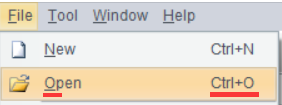

Shortcut key
To use menu shortcut keys: Open a target menu and on the right of the desired option, there is the shortcut key. The shortcut key can also be the underlined letter of the desired option.
As the following shows, we want to use the Open functionality and first we open the File menu, the shortcut key is CTRL+O or O.

Sometimes we can use a shortcut key directly without through the menu. To start the designer, for instance, just press CTRL+O to enable the Open functionality.
To use button shortcut keys: A button shortcut key is alt + the underlined letter. To close data source connection, for instance, use alt+C.